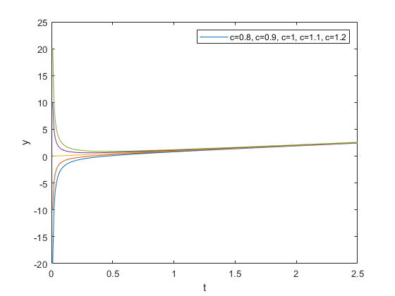
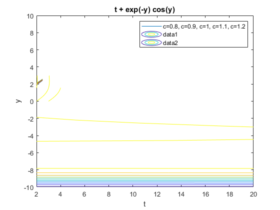

Contents
clear all; %Name Yizhan Ao & Yisheng Leng MATH246 Project2
Exercise 1
pages 86.3 a
format long syms t c; res = 't*Dy+y = 2*t'; y(t,c)=dsolve(res, 'y(1) = c', 't') % b fprintf('at t = 0.01, c = 0.8, y = %f\n',y(0.01,0.8)); fprintf('at t = 0.1, c = 0.8, y = %f\n',y(0.1,0.8)); fprintf('at t = 1, c = 0.8, y = %f\n',y(1,0.8)); fprintf('at t = 10, c = 0.8, y = %f\n',y(10,0.8)); fprintf('at t = 0.01, c = 1, y = %f\n',y(0.01,1)); fprintf('at t = 0.1, c = 1, y = %f\n',y(0.1,1)); fprintf('at t = 1, c = 1, y = %f\n',y(1,1)); fprintf('at t = 10, c = 1, y = %f\n',y(10,1)); fprintf('at t = 0.01, c = 1.2, y = %f\n',y(0.01,1.2)); fprintf('at t = 0.1, c = 1.2, y = %f\n',y(0.1,1.2)); fprintf('at t = 1, c = 1.2, y = %f\n',y(1,1.2)); fprintf('at t = 10, c = 1.2, y = %f\n',y(10,1.2)); %c i = 0.01:0.01:2.5; c = [0.8,0.9,1,1.1,1.2]; figure for x = 1:5 a = y(i,c(x)); plot(i,a) hold on end xlabel('t') ylabel('y') legend('c=0.8, c=0.9, c=1, c=1.1, c=1.2 ') % d % Since the value of c does not affect the solutions as the t tends to % going infinitelyfor t that approaching to 0 when the value c is less than % 1 the function is tending to reaching 0 while c is bigger than 1. Then % the function tends to decreases.
Warning: Support of character vectors and strings will be removed in a future release. Use sym objects to define differential equations instead. y(t, c) = (t^2 + c - 1)/t at t = 0.01, c = 0.8, y = -19.990000 at t = 0.1, c = 0.8, y = -1.900000 at t = 1, c = 0.8, y = 0.800000 at t = 10, c = 0.8, y = 9.980000 at t = 0.01, c = 1, y = 0.010000 at t = 0.1, c = 1, y = 0.100000 at t = 1, c = 1, y = 1.000000 at t = 10, c = 1, y = 10.000000 at t = 0.01, c = 1.2, y = 20.010000 at t = 0.1, c = 1.2, y = 2.100000 at t = 1, c = 1.2, y = 1.200000 at t = 10, c = 1.2, y = 10.020000
Exercise 2
7, page 87-88 a
syms y c; res = '(exp(y))+(t*exp(y)-sin(y)*Dy)=0'; x = dsolve(res ,'t'); % b syms y c; res = '(exp(y))+(t*exp(y)-sin(y)*Dy)=0'; x = dsolve(res , 'y(-1) = 0', 't'); syms t y f = t + exp(-y)*cos(y); ezcontour(f,[-1,4],[0,3]); % c ezcontour(f,[2, 20],[-10,10]) % d
Warning: Support of character vectors and strings will be removed in a future release. Use sym objects to define differential equations instead. Warning: Unable to find symbolic solution. Warning: Support of character vectors and strings will be removed in a future release. Use sym objects to define differential equations instead. Warning: Unable to find symbolic solution.
Exercise 3
18 page 92